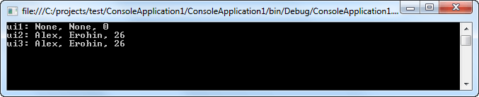

| Тема 2. Перегрузка конструкторов. | ||
| Назад | ||
|
Как и методы, конструкторы также могут перегружаться. Это дает возможность конструировать объекты самыми разными способами: using System; using System.Collections.Generic; using System.Linq; using System.Text; namespace ConsoleApplication1 { class UserInfo { public string Name, Family; public byte Age; // Создадим несколько перегруженных конструкторов public UserInfo() { } public UserInfo(string Name) { this.Name = Name; } public UserInfo(string Name, string Family) { this.Name = Name; this.Family = Family; } public UserInfo(string Name, string Family, byte Age) { this.Name = Name; this.Family = Family; this.Age = Age; } } class Program { static void Main(string[] args) { // Создадим несколько объектов типа UserInfo // используя перегруженные конструкторы UserInfo obj1 = new UserInfo(); UserInfo obj2 = new UserInfo(Name: "Alex"); UserInfo obj3 = new UserInfo(Name: "Alex", Family: "Erohin"); UserInfo obj4 = new UserInfo(Name: "Alex", Family: "Erohin", Age: 26); Console.ReadLine(); } } } Одна из самых распространенных причин для перегрузки конструкторов заключается в необходимости предоставить возможность одним объектам инициализировать другие, наподобие того, как в предыдущем примере инициализируются поля класса. Когда приходится работать с перегружаемыми конструкторами, то иногда очень полезно предоставить возможность одному конструктору вызывать другой. В C# это дается с помощью ключевого слова this. Ниже приведена общая форма такого вызова: имя_конструктора(список_параметров1) : this(список_параметров2) {
// ... Тело конструктора, которое может быть пустым.
}
В исходном конструкторе сначала выполняется перегружаемый конструктор, список параметров которого соответствует критерию список_параметров2, а затем все остальные операторы, если таковые имеются в исходном конструкторе. Ниже приведен соответствующий пример: using System; using System.Collections.Generic; using System.Linq; using System.Text; namespace ConsoleApplication1 { class UserInfo { public string Name, Family; public byte Age; // Используем ключевое слово this для // создания "цепочки" конструкторов public UserInfo() : this("None","None",0) { } public UserInfo(UserInfo obj) : this(obj.Name, obj.Family, obj.Age) { } public UserInfo(string Name, string Family, byte Age) { this.Name = Name; this.Family = Family; this.Age = Age; } } class Program { static void Main(string[] args) { UserInfo ui1 = new UserInfo(); Console.WriteLine("ui1: {0}, {1}, {2}",ui1.Name,ui1.Family,ui1.Age); UserInfo ui2 = new UserInfo("Alex","Erohin",26); Console.WriteLine("ui2: {0}, {1}, {2}", ui2.Name, ui2.Family, ui2.Age); UserInfo ui3 = new UserInfo(ui2); Console.WriteLine("ui3: {0}, {1}, {2}", ui3.Name, ui3.Family, ui3.Age); Console.ReadLine(); } } } Constructor chaining  Вызывать перегружаемый конструктор с помощью ключевого слова this полезно, в частности, потому, что он позволяет исключить ненужное дублирование кода. В приведенном выше примере нет никакой необходимости дублировать во всех трех конструкторах одну и ту же последовательность инициализации, и благодаря применению ключевого слова this такое дублирование исключается. Другое преимущество организации подобного вызова перегружаемого конструктора заключается в возможности создавать конструкторы с задаваемыми "по умолчанию" аргументами, когда эти аргументы не указаны явно. |
||
| Конспект подготовлен Бакулиным А. М. 2022 год. | ||